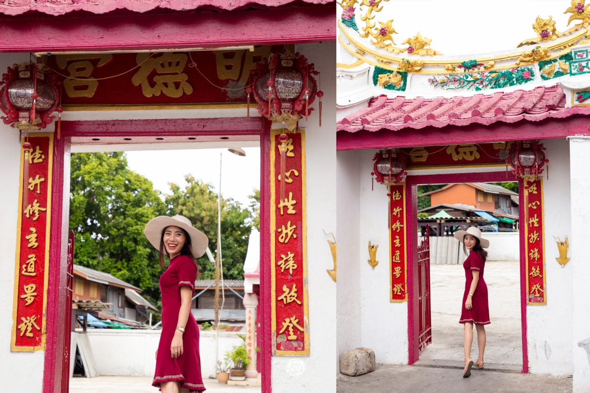
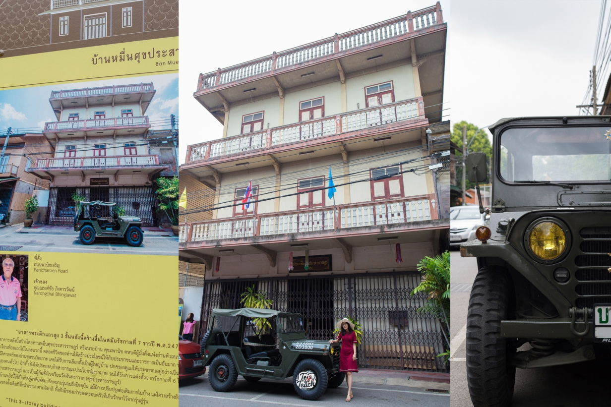
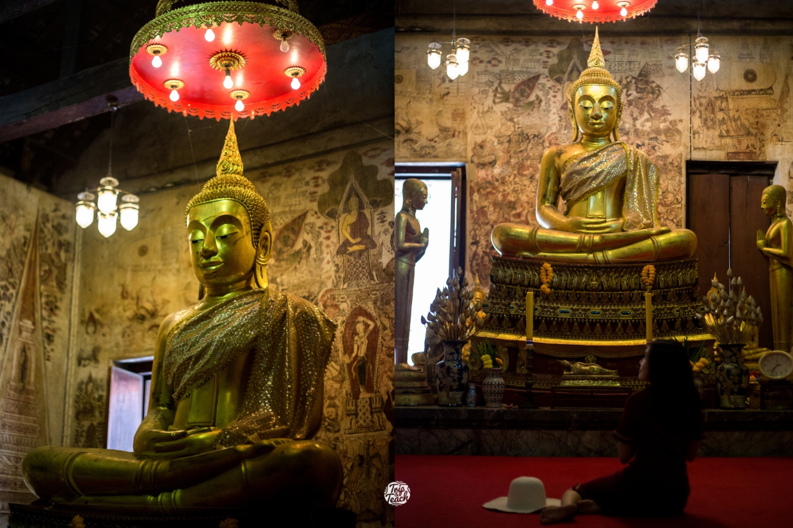

ชุมชนวัดเกาะเป็นชุมชนเก่าแก่ ผสมผสานไทย-จีน วัดวาอาราม
ศาลเจ้า โรงเจ สถาปัตยกรรมเก่าแก่หลายยุคหลายสมัยหาได้ที่นี่เท่านั้นเลยค่ะ
ถัดมา ชุมชนซอยตลาดริมน้ำเพชรบุรี เป็นเรือนแถวแบบเก่า ขายขนมเก่าปนใหม่
ขนมไทยโบราณหายากๆมาที่นี่มีหมดค่ะ ระหว่างทางเดินในตลาด เค้าก็มีภาพ Street Art
ให้เด็กรุ่นใหม่มาโชว์ฝีมือกัน กลายเป็นจุดถ่ายรูปเก๋ๆกลางตลาดไปเล้ยย และชุมชนสุดท้ายคือชุมชนคลองกระแชง
เป็นย่านเก่าที่มีความโมเดิร์นผสมปนเปเข้าไปด้วย ร้านอาหาร/คาเฟ่น่ารักๆที่มีกลิ่นอายความเป็นดั้งเดิม
ลองเดินเล่นดูแล้วจะรู้ว่าควรมาจริงๆ
วัดเกาะ หรือ วัดเกาะแก้วสุทธาราม
ภายในมีภาพจิตรกรรมฝาผนังเขียนด้วยสีฝุ่น ภาพอลังการทุกด้านโบสถ
ไม่ว่าจะเป็นภาพจักรวาลตามคติโบราณ
ภาพพุทธประวัติตอนมารผจญ
ภาพพุทธประวัติตอนสำคัญต่างๆ สวยและหาดูยากมากๆ